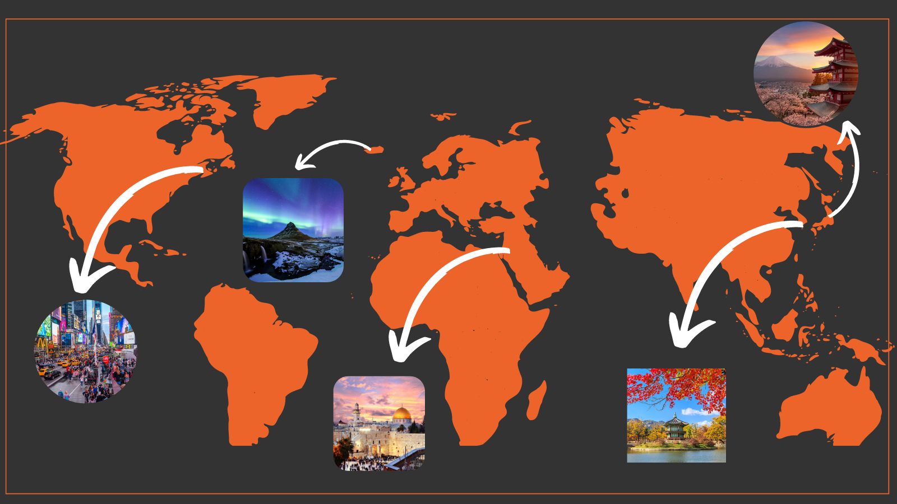

DREAM PLACES TO VISIT
Japan is epitome of our futuristic society. Their lifestyle and culture is mesmerizing, at the same time still hold a traditional value in so many aspect like temples & shrine, how you respect people, spaces, time, & life. Japan is unique, open to the world yet have their own world. One of the biggest economy in the world. I want to travel Japan of course to experience its culture both modern & traditional, unique custom you can’t see in other countries. Like how packed and chaotic Tokyo is, but still the most safest city on Earth, the beautiful nature, its people and their craftsmanship.
Places and foods in Japan


South Korea is a fascinating country with a rich history and culture. It's a destination that will definitely leave you feeling inspired and excited about the world. Here are some of the reasons why you might want to travel to Korea: Its beautiful scenery - From the lush green mountains of the Gyeongsang province to the beaches of Jeju Island, Korea has it all. No matter what time of year you visit, you're sure to be blown away by its beauty. And, Its delicious food - From traditional Korean BBQ dishes to modern interpretations of traditional dishes, there's something for everyone when it comes to food in Korea. Whether you're a foodie or not, you're sure to enjoy everything Korea has to offer!
Places and foods in South Korea

Jerusalem is one of the holiest cities in the world; revered by three major faiths, and remains the holiest place in the Jewish faith. It’s streets, it’s stones, it’s hills are all ancient observers of over four thousand years of volatile history. Yet, it remains the symbol of a coming day when mankind will live together in peace, brotherhood, acceptance of the other, love and unity.
Places and foods in Jerusalem
Iceland is a country known for its stunning natural beauty, with a range of popular tourist attractions that showcase its unique landscapes. Some of the most popular natural attractions in Iceland include: 1The Blue Lagoon: Located in a lava field in the southwest of the country, the Blue Lagoon is a geothermal spa that is known for its bright blue waters and natural therapeutic properties. 2Geysir: This geothermal field is home to a number of hot springs and geysers, including the famous Strokkur geyser, which erupts every few minutes. 3Gullfoss: This stunning waterfall is located in the southwest of the country and is one of the most popular natural attractions in Iceland.
Places and foods in Iceland

New York City is one of the most charismatic cities in the world. The experience of visiting it not only varies according to the time you travel, but there is a New York for each person and for each occasion. For example, traveling to New York for Christmas is a unique opportunity to see how the holidays are lived on the other side of the Atlantic, enjoy the Christmas decorations, go ice skating or go shopping. However, the American city also looks beautiful in spring or fall, when its parks are filled with color. There is a lot to see in New York whatever the season.
Places and foods in New York